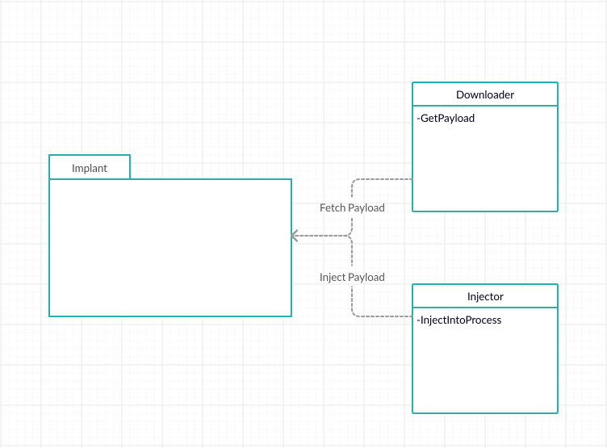
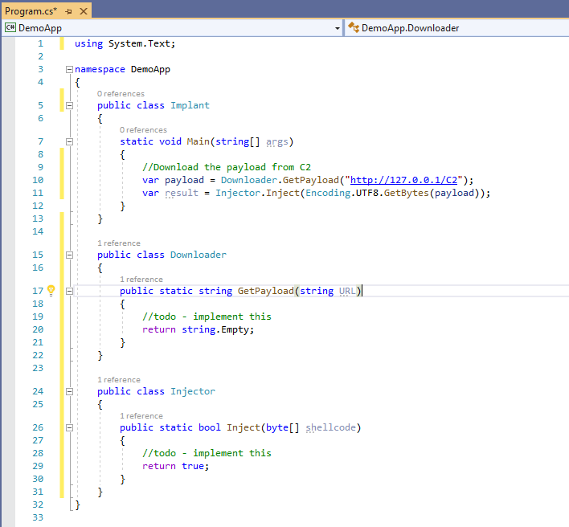
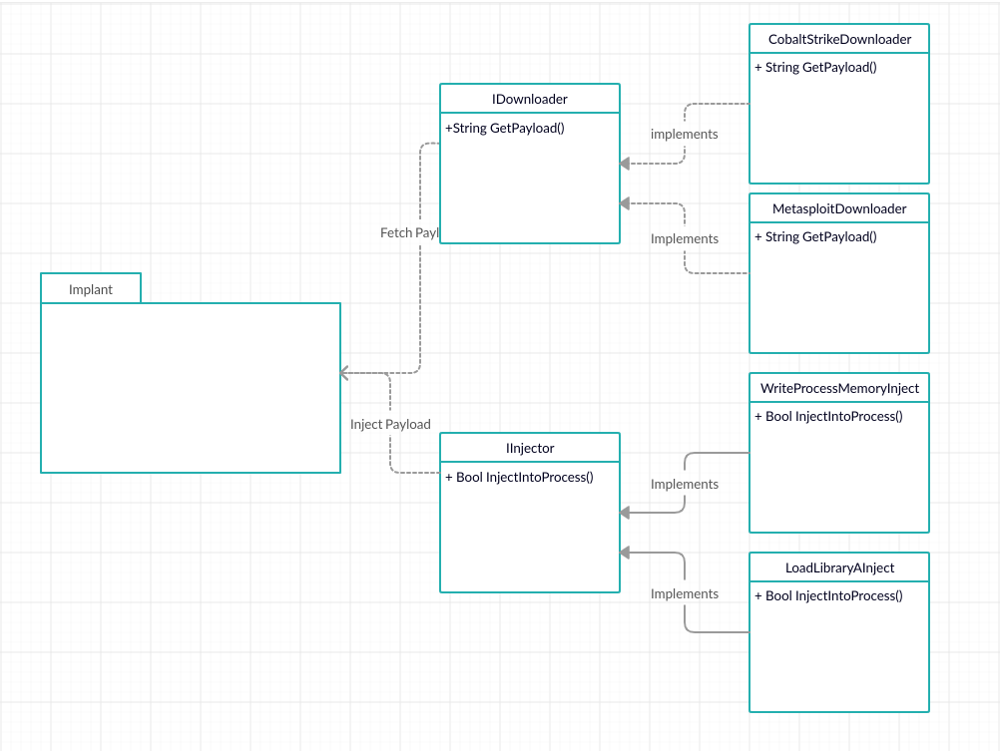
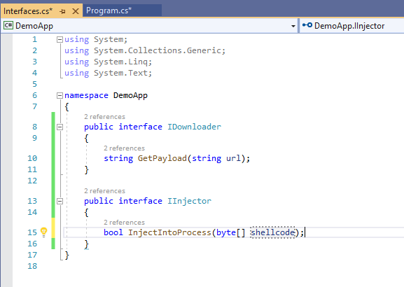
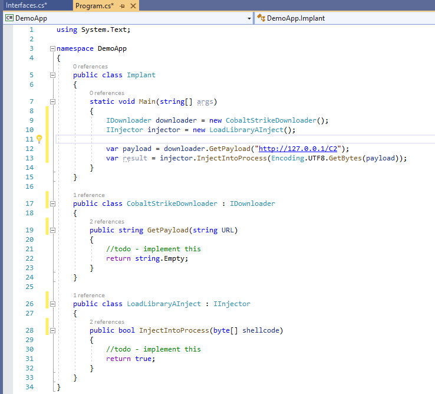
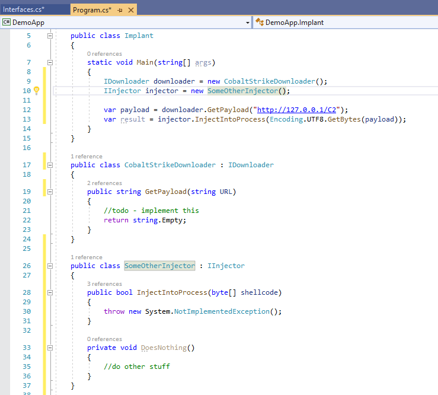

Offensive security professionals are spending more time writing code. While the industry has seen a steady move towards adopting dev-ops practices such as infrastructure as code (IaC), OST projects often neglect basic software development principals. Software development has progressed to a point where agile methodologies, test driven development and extensive use of design patterns are common, unfortunately developers of offensive security tooling have, for the most part, been slower to adopt these principals. With this series of posts, I’m hoping to introduce some basic software development fundamentals and demonstrate how, with minimal additional effort, we can all start producing “better” code. So what do we mean by “better” code? If we’re investing an amount of time in developing some tooling, it would be great if that code was easily maintainable, testable, expandable and, wherever possible, not duplicating effort with other projects. To give you an example, using AES to encrypt payloads is a pretty common requirement. In an ideal world, we’d write some code to do this once, test it thoroughly, then re-use it across all our projects. This gives us the advantage of knowing that, provided we’ve not change that code, it will do exactly what we need when we bring it into another project. If we wrote our test-cases properly, we can quickly verify that assumption whenever we want. Before we get into the wonderful world of unit testing and design patterns, we need to understand a few key concepts. Most of the design patterns and unit testing strategies we will look at rely on the use of these core concepts, so it’s worth taking the time to understand them properly. While these will be common knowledge to anyone who’s spent some time in a development role, I’m going to assume no prior knowledge here. Skip ahead if you’re already aware of these concepts. One of the key concepts of software development is the “Single Object Responsibility Principal”. This principal states that objects should have only one reason to by updated. As an example, consider a class which downloads a payload from C2 and injects it into a running process. You might change (update) this class if the C2 changes, or the injection method changes. According to the single responsibility principal, this functionality should be split into two independent modules, one responsible for the download operation, and one responsible for the injection. This might be easier to visualize as a diagram:  Here, the “implant” object references the“Downloader” and “Injector” classes, which implement their respective functionality. If we wanted to change the injection process, we could update the Injector class, without having to modify the implant or downloader objects. In code, this would look something like this (although, in reality, we would have separate files for each class):  Hopefully it’s apparent that we can make changes to these classes without impacting the main Implant class. Structuring our code in this way also allows us to write effective unit tests. We touched on unit testing briefly in a previous post, and we’ll come back to it later in this series, but for now we just need to understand that adopting the single responsibility principal makes testing significantly easier. To illustrate this, lets assume we have a single class, containing our download and injection code. We want to test this code to make sure it does actually download and inject our payload. How do we do this? We would have to run the implant, fetch a payload from C2 and inject it, then try and observe the results. This approach has a number of disadvantages. First, we are dependent on a working C2 channel to fetch the payload, we are also dependent on being able to observe the result of the injection, which is likely to be quite difficult. We cant observe each step of the process, we must call the injector and wait for the result. We could potentially read logs from our C2 to check that the payload was fetched, but we then have no visibility until we check the injection happened. Should the process fail, we have no way of knowing where that failure occurred without debugging the code. This means we can’t effectively introduce error conditions and check the programs response. For example, we may want to ensure that if the code fails to find the target process, it fails silently and cleans up. With this test strategy, we cant confirm that the code failed because we gave it an invalid process. We may get the result we expect, but for another, unexpected reason. Separating the code into different classes allows us to call those methods independently, giving us the potential for greater test coverage and control over how we observe the actions of the class. In this example, we can pass crafted shellcode to our injector or set up a fake C2 channel for our downloaders. So far, we’ve managed to get our program to a point where we can start writing effective unit tests, while also allowing changes to each component without having to modify other classes. That’s pretty good progress for implementing one of the SOLID principals. Now, what if we want to support multiple C2 protocols, or multiple injection strategies? This is where interfaces come into play. An interface is a definition file. It describes the publicly accessible methods and properties which must be implemented by any class which wishes to implement that interface. The actual detail of the implementation is down to the class which implements the interface. The key benefit here is we can replace references to objects in our code with references to interfaces. At some point, we have to tell the program what class to use in place of that interface, but we only need to do this once. Multiple classes can implement the same interface, which means they can all be swapped out whenever we like. Let’s look at a diagram:  In this example, we have two interfaces, IDownloader and IInjector (this is the naming convention when defining interfaces). Each interface is implemented by classes which do different things, Injection using different API calls and fetching payloads from different C2 frameworks. Lets take a look at this in code. First, we define our interfaces (again, these would normally be in separate files).  Once defined, we can modify our classes to implement these new interfaces and update the “Implant” code.  Our classes now implement the new interfaces. Within the Implants “Main” method, we define the downloader and injector objects as interface types, which we then use as before. Using this pattern, we can now add new injectors and downloaders while making minimal changes to the Implant code.  With this approach, we can now start to write reusable code. For example, downloading a payload from C2 is probably an operation we want to perform in multiple projects. If we move that code into a utility library, we can then bring that library into other projects as needed. The use of interfaces also presents some unique potential for testing our code. During development, we could use a dummy object during debugging, by, for example, returning a basic payload string directly rather than calling out to C2 infrastructure. This would allow us to focus on other areas of the project while knowing that, assuming we wrote effective unit tests for our original code, we can drop in an existing implementation later with minimal risk of also introducing bugs. It also removes the need to spin up C2 infrastructure during development. This approach is known as “mocking”, and is something we will cover in more detail in another post. So far, we’ve seen how small design changes can allow for code reuse and effective unit testing. In our example, we are still having to define the concrete class we are using within our code. Each time we wish to use a new class, we must modify our code to reflect that change. Later posts in this series will address this problem and start to look at more complex design patterns and testing strategies. Before we call it a day with this post, its also worth briefly mentioning code structure and commenting. Writing maintainable code is not always about using design patterns and having perfect layers of abstraction. Sometimes, you just need a good, descriptive comment. As a general rule, methods should be reasonably short. 15–20 lines of functional code is about right. Obviously there are exceptions to this rule, but it’s a good target to aim for. If you’ve ever tried to debug a 2000 line method, you’ll understand why. If you haven’t, it’s something I recommend you avoid at all costs. Comments should be applied where clarifying what the code does is useful. For example, a particularly complex piece of logic, or a an assumption. As a general rule, a comment block on each method describing what the method does and its expecting input and outputs is usually worth including. For an example of effective commenting, take a look at the source for Seatbelt. As a final note, its worth mentioning that no one uses these principals all the time. For PoC code they simply aren’t worth the effort. However, for larger projects, making small changes at development time can have real benefits further down the line. ← Previous Post Next Post→